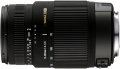
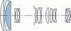

器材库 > 35mm画幅AF变焦镜头 > DG 70-300/4-5.6 OS

详细规格
镜头类型
远摄变焦镜头
发布日期
2009-09-04
厂家推荐价格
61,950.00 （日元）
焦距
70mm-300mm
最大光圈
f/4-f/5.6
最小光圈
f/22
视角（对角）
34.00°-8.20
镜头结构
16片/11组
低/超低色散镜片
1片
光圈叶片
9片
最近对焦距离
150cm
最大放大倍率
0.256倍
驱动马达
AF马达
滤镜口径
62mm
镜头卡口
Canon EF, Minolta/Konica-Minolta/Sony AF, Nikon AF, Pentax AF, Sigma SA
防抖
是
颜色
黑色
尺寸
76×162mm
重量
610g
该产品暂无存档的网友点评
产品图 / 样片
外观图

光学结构图